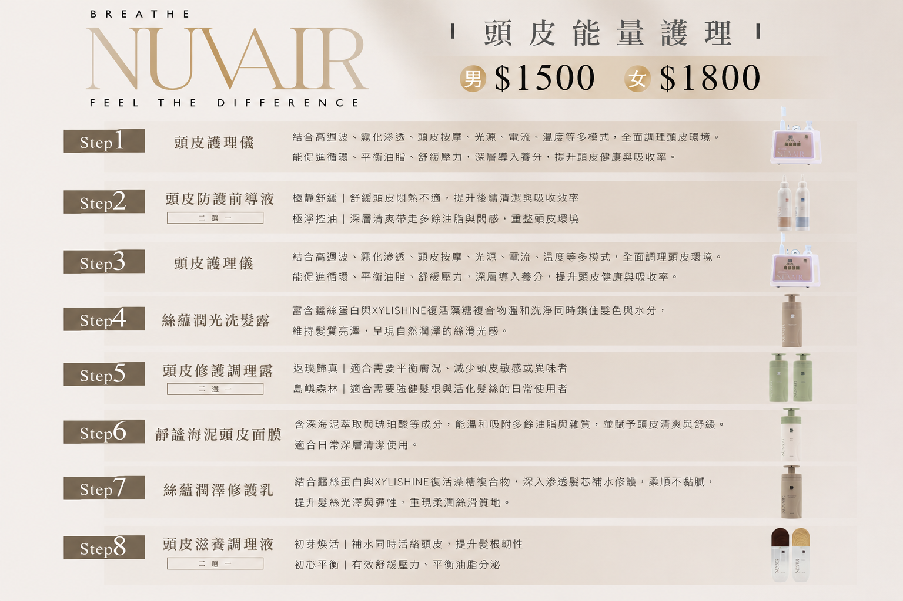

初羽接髮
適合希望自然延長、初次嘗試接髮，並重視輕盈感的客人。
依原生髮量、理想長度、髮色與日常整理需求，提供專屬接髮配置與現場評估。
多數完整接髮方案約需 70～100 束，實際束數會依髮況、長度、髮色與希望效果客製評估。
初羽、豐羽、豐羽 Pro 與特殊包覆型設計皆採預約諮詢，不於官網顯示固定價格，避免在未評估髮況前提供不準確的預算。
適合希望自然延長、初次嘗試接髮，並重視輕盈感的客人。
適合需要更明顯髮量支撐與整體飽滿度的人。
包覆性軟頭設計，著重舒適度、服貼度與接點質感。
美麗的髮型，也需要舒適、清爽的頭皮環境作為基礎。
以頭皮清潔、舒緩與日常保養為核心，依頭皮狀態安排每月 1–2 次保養頻率。

本服務為美容保養用途，不涉及醫療診斷、治療或療效保證。